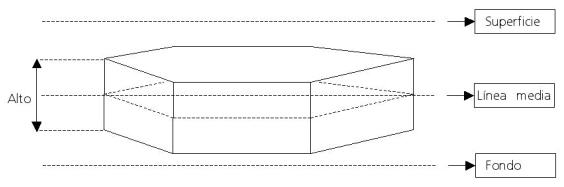

Cardumen
El modelo trata el cardumen como un prisma delimitado por dos polígonos irregulares cuyo contorno lo define el operador durante la preparación. La posición del cardumen es siempre horizontal, no se consideran ángulos de inclinación del prisma.

Estado del cardumen
El cardumen puede estar en estado activo o inactivo. Se considera activo cuando se encuentra en una posición y profundidad correcta que permiten evaluar el modelo, se considera inactivo, en caso contrario, cuando se encuentra en una posición o profundidad incorrecta que no permiten evaluar el modelo. Cuando está inactivo, el gráfico del cardumen aparece parpadeando en la Presentación Cartográfica.
Si durante la preparación se define un cardumen en una posición o profundidad no válida (en colisión con costa, colisión con fondo o fuera del agua) se muestra un mensaje al operador y se le asigna estado inactivo.
Si durante la ejecución se sitúa el cardumen en una posición o profundidad no válida (en colisión con costa, colisión con fondo o fuera del agua) se muestra un mensaje al operador y se le asigna estado inactivo.
Desplazamiento Horizontal
El cardumen se desplaza horizontalmente con el rumbo y velocidad especificados en preparación teniendo en cuenta la corriente de la zona meteorológica en la que se encuentran. No le afectan los mapas de corriente. El rumbo y la velocidad se pueden modificar durante la ejecución.
Los buques cercanos pueden afectar al movimiento del cardumen cuando se encuentran a una determinada distancia. En este caso, el cardumen cambia su rumbo hacia el rumbo de huída (contrario a la demora del buque respecto al cardumen) y también cambia la velocidad de acuerdo con la siguiente fórmula:
velocidad cardumen = velocidad máxima del pez * factor sorpresa
Donde “factor sorpresa” es un factor que se establece en preparación y que varía en función de la distancia entre el cardumen y el buque, simulando un comportamiento diferente para cada distancia. Cuando el buque se encuentra a una distancia igual o inferior a la establecida en preparación, se aplica el factor sorpresa correspondiente. (Ver el apartado “Preparación de Modelos Básicos / Elementos del Escenario/ Peces” del Manual de Instructor).
Se entiende por buque cercano, el buque más cercano al punto central del cardumen, y la distancia entre el cardumen y buque para aplicar el factor sorpresa se calcula desde el borde del cardumen, considerando dicho borde, el del cuadrado obtenido como se describe a través del siguiente gráfico:
Tanto si hay buque cercano como si no lo hay, el rumbo del cardumen se mantiene hasta que produzca cualquiera de las siguientes circunstancias:
- el operador lo modifique manualmente
- aparezca otro buque cercano que lo haga cambiar de dirección
- se produzca el choque con la costa
Cuando el cardumen choca con la costa, se calcula un nuevo rumbo de forma aleatoria, si el rumbo calculado es incorrecto, es decir, si el cardumen no puede desplazarse en ese rumbo sin chocar de nuevo, se calcula un nuevo rumbo, y así sucesivamente hasta que se encuentre un rumbo correcto.
Si el cardumen se encuentra acorralado por un buque cercano, de manera que el rumbo de huída es incorrecto (choca contra costa o fondo), se le permite calcular nuevos rumbos de huída como en el caso anterior.
Cuando el cardumen está dentro de la red de cerco, no tiene movimiento horizontal.
Desplazamiento Vertical
El desplazamiento vertical tiene en cuenta la Marea, la Profundidad solicitada, la Máxima Velocidad vertical y el Margen de movimiento vertical y consiste en un desplazamiento en altura, a una velocidad aleatoria entre 0.1 y la máxima velocidad definida, manteniéndose siempre dentro de los márgenes definidos por encima y por debajo de la profundidad solicitada en cada momento. Para evaluar el movimiento vertical se tiene en cuenta la profundidad de la línea media del cardumen.

Del gráfico se deduce que si el margen es 0 no hay movimiento vertical y el cardumen se mantiene a la profundidad solicitada.
El desplazamiento vertical está limitado por la altura del cardumen, de manera que si dentro de la franja de desplazamiento vertical la parte superior del cardumen alcanza la superficie, o la parte inferior alcanza el fondo, no continúa el ascenso o descenso.
Si durante la ejecución se cambia la profundidad solicitada, el cardumen se dirige a la nueva profundidad a la máxima velocidad vertical definida, y cuando entra en la franja delimitada por el margen de movimiento vertical, iniciará el movimiento vertical aleatorio dentro de la propia franja.
En la red de cerco, el cardumen mantiene el movimiento vertical de manera que puede escapar de la red si se sale por la parte inferior.
Si el cardumen no tiene desplazamiento vertical (la velocidad vertical o el margen son 0) el cardumen se mantiene a la profundidad solicitada, siempre que quepa. Si choca con el fondo por un desnivel del terreno el cardumen asciende hasta situar la parte inferior a la profundidad del fondo. La colisión con el fondo se calcula para el punto medio del polígono que forma el cardumen y sólo para ese punto.
Si durante el ascenso para salvar desniveles del fondo, el cardumen no cabe (se sale por la superficie), actúa de la misma manera que cuando choca con costa, se calcula un nuevo rumbo de forma aleatoria, si el rumbo calculado es incorrecto, es decir, si el cardumen no puede desplazarse en ese rumbo, se calcula un nuevo rumbo, y así sucesivamente hasta que se encuentre un rumbo correcto.
Una vez salvado el desnivel del fondo el cardumen se dirige de nuevo a la profundidad solicitada que no la alcanzará hasta que el fondo esté lo suficientemente profundo.
Si el operador sitúa el cardumen en una posición o profundidad no válida (colisión con costa, con fondo o con superficie) el modelo muestra un mensaje de aviso y el cardumen pasa a estado inactivo.
Para la colisión con costa el cardumen se considera igual a un cuadrado cuyo lado es igual al lado más largo de su bounding box.
Densidad y área del cardumen
El cardumen mantiene siempre la misma densidad. Cuando se va pescando disminuye el área de cardumen hasta que desaparece.
Visual
En el visual se mostrará tanto el cardumen como las aves asociadas.
Para definir las aves asociadas al cardumen, se establecen dos parámetros generales en el fichero de configuración:
- Máximo número de aves por metro cuadrado
- Número total de aves permitido
Estos dos parámetros se aplican a todos los cardúmenes. Asimismo, en preparación se define la densidad de aves para cada cardumen, con los siguientes valores:
- Sin aves = 0
- Baja = 0.25
- Moderada = 0.5
- Alta = 0.75
- Muy alta = 1
Con estos datos se calcula el número de aves por metro cuadrado asociados a un cardumen:
número de aves por m² = máximo número de aves por m² * densidad
Finalmente el número total de aves se obtiene aplicando la siguiente fórmula, teniendo en cuenta que este número no puede ser mayor que el “Número total de aves permitido” que se haya establecido en el fichero de configuración:
número de aves = número de aves por m² * área del cardumen
Para la representación visual del cardumen, se establece un parámetro general en el fichero de configuración:
- Máxima profundidad para que un cardumen se muestre en el visual
La representación visual del cardumen consiste en un oscurecimiento del mar que es más intenso cuando el cardumen está en superficie y menos intenso cuanto mayor sea la profundidad en la que se encuentra la parte superior del cardumen. Cuando el cardumen alcanza la máxima profundidad especificada en el fichero de configuración no se representa en el visual.
El oscurecimiento del mar cuando el cardumen está en superficie, se calcula teniendo en cuenta el volumen de cada pez, el número de peces por metro cúbico que cabrían en el cardumen y la densidad especificada para el cardumen, aplicando las siguientes fórmulas:
volumen del pez = ∏ * (diámetro del pez / 2.0) * longitud del pez
densidad del pez = 1 / volumen del pez
oscurecimiento en superficie = mínimo (100, densidad del cardeuen * 100 / densidad del pez)